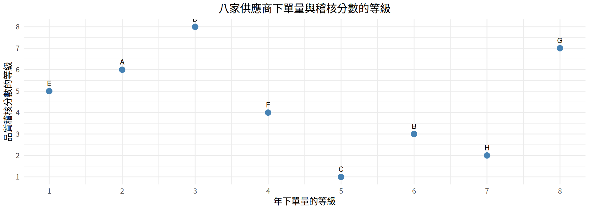

A B C D E
4.0 2.5 5.0 2.5 1.0 統計學
第13章：無母數統計
劉昱佑
實踐大學
2026-09-20
本章概覽
第13章介紹無母數（無分配假設）方法——當常態性假設無法成立、資料屬於名目或順序尺度，或所檢定的假設與母體參數無關時，可以使用的統計檢定。
| 節次 | 主題 |
|---|---|
| 13-1 | 母數與無母數檢定的比較；優點與缺點；排序與同分規則 |
| 13-2 | 單樣本符號檢定（中位數）；表 A-10；大樣本 z；成對樣本符號檢定 |
| 13-3 | 兩獨立樣本的 Wilcoxon 等級和檢定；R、\mu_R、\sigma_R |
本章概覽（續）
| 節次 | 主題 |
|---|---|
| 13-4 | 兩相依樣本的 Wilcoxon 符號等級檢定；w_s；n > 30 的 z 公式 |
| 13-5 | Kruskal-Wallis（H）檢定；卡方近似，\text{d.f.} = k - 1 |
| 13-6 | Spearman 等級相關 r_s；隨機性的連串檢定 G；大樣本 z 公式 |
本章學習目標
讀完本章後，你應該能夠
- 說出無母數方法的優點與缺點。
- 使用符號檢定進行假設檢定。
- 使用 Wilcoxon 等級和檢定進行假設檢定。
- 使用符號等級檢定進行假設檢定。
- 使用 Kruskal-Wallis 檢定進行假設檢定。
- 計算 Spearman 等級相關係數。
- 使用連串檢定進行假設檢定。
導論
z、t、F 等統計檢定稱為母數檢定。它們是針對平均數、變異數、比例等母體參數的檢定，並且對抽樣所來自的母體有所假設——其中一項假設就是這些母體呈常態分配。
但如果某個假設檢定情境中的母體不是常態分配呢？統計學家為此發展出一支稱為無母數統計或無分配假設統計的方法。無母數統計也可以用來檢定與 \mu、\sigma、p 等特定母體參數無關的假設。
無母數統計檢定
當常態性的假設無法滿足時，無母數統計檢定用來檢定關於母體參數的假設。
本章涵蓋的方法
體育記者可能想知道兩位裁判對 10 位奧運跳水選手的評分排名之間是否有關聯；社會學家可能想確認男性與女性報名某個戒毒復健計畫的順序是否隨機。這些情境所使用的統計檢定就是無母數（無分配假設）檢定。
本章說明的無母數檢定包括符號檢定、Wilcoxon 等級和檢定、Wilcoxon 符號等級檢定、Kruskal-Wallis 檢定與連串檢定；此外也介紹用來判斷等級之間關聯的統計量——Spearman 等級相關係數。
第13-1節：無母數方法的優點與缺點
無母數方法的優點
當常態性的假設無法滿足時，無母數檢定與統計量可以取代其母數版本（z、t、F）。但不要因此就認為無母數統計一定比母數統計好——使用無母數方法有優點，也有缺點。
六項優點
- 當變數不呈常態分配時仍可用來檢定母體參數。
- 可用於名目或順序尺度的資料。
- 可用來檢定與母體參數無關的假設。
- 在某些情況下，計算比母數版本容易。
- 容易理解。
- 需要滿足的假設條件較少，而且這些假設比較容易驗證。
無母數方法的缺點
三項缺點
- 當母數方法的假設條件成立時，無母數方法較不敏感。因此需要更大的差異才能拒絕虛無假設。
- 無母數檢定所運用的資訊較少。例如符號檢定只要求研究者判斷資料值在中位數之上或之下，而不管高出或低於中位數多少。
- 當母數方法的假設條件成立時，無母數方法效率較低——必須以較大的樣本數來彌補資訊的流失。無母數的符號檢定大約只有其母數版本（z 檢定）的 60% 效率：符號檢定需要 100 個樣本，才能得到 z 檢定用 60 個樣本就能得到的結果。
兩類方法如何選擇
注意
既然無母數方法有優點也有缺點，研究者在選用時就應該謹慎。如果母數方法的假設條件可以滿足，就應優先採用母數方法；當母數方法的假設條件無法滿足時，無母數方法才是分析資料的有力工具。
無母數統計的假設條件
- 樣本必須是隨機抽取的。
- 若使用兩個以上的樣本，除非另有說明，各樣本之間必須互相獨立。
排序
許多無母數檢定都涉及資料的排序。
排序
排序是依照某種評分尺度，把一個資料值在資料序列中定出位置。排序屬於順序尺度的變數。
某位評審用 1 到 10 的量尺替五位演講者評分，1 分最好、10 分最差。
| 演講者 | A | B | C | D | E |
|---|---|---|---|---|---|
| 評分 | 8 | 6 | 10 | 3 | 1 |
演講者 E 分數最低（1 分），排名第一；D 次低（3 分），排名第二，其餘依此類推。
| 演講者 | E | D | B | A | C |
|---|---|---|---|---|---|
| 評分 | 1 | 3 | 6 | 8 | 10 |
| 名次 | 1 | 2 | 3 | 4 | 5 |
有同分時的排序
假設兩位以上的演講者得到相同分數：
| 演講者 | A | B | C | D | E |
|---|---|---|---|---|---|
| 評分 | 8 | 6 | 10 | 6 | 3 |
同分的處理規則
名次同分時，必須採用這些名次的平均數。此處 D 與 B 並列第 2、第 3 名，兩人的名次都是
\frac{2 + 3}{2} = \frac{5}{2} = 2.5
| 演講者 | E | D | B | A | C |
|---|---|---|---|---|---|
| 評分 | 3 | 6 | 6 | 8 | 10 |
| 名次 | 1 | 2.5 | 2.5 | 4 | 5 |
資料常常本來就是名次。P 值方法僅限於常態或卡方分配的檢定。
排序的 R 實作
準備資料——rank() 由小到大排序，並且預設把同分者指定為這些名次的平均數，正好就是上述規則。
兩位得 6 分的演講者原本會占據第 2 與第 3 名，所以各得名次 2.5。
第13-2節：符號檢定
單一樣本符號檢定
最簡單的無母數檢定是單一樣本的符號檢定，用來檢定某個樣本所對應的中位數值。
單一樣本符號檢定
單一樣本符號檢定是用來檢定母體中位數數值的無母數檢定。
研究者先對母體中位數假設一個特定數值，接著抽取隨機樣本，並把每個資料值與這個假設中位數比較。
- 資料值高於假設中位數，給一個正號。
- 資料值低於假設中位數，給一個負號。
- 資料值恰好等於假設中位數，給 0。
若 H_0 為真，正號個數應與負號個數大致相等；若 H_0 不為真，正號或負號的個數就會明顯偏多。
符號檢定的檢定統計量
符號檢定的檢定統計量
若 n \leq 25，檢定統計量是正號與負號中個數較少者。當 n > 25 時，檢定統計量為
z = \frac{(X + 0.5) - 0.5n}{\sqrt{n} / 2}
其中 X 是正號與負號中個數較少者，n 是正號與負號的總個數。
- 當 n \leq 25 時，由表 A-10 查臨界值。在給定的 \alpha 下，若檢定統計量小於或等於臨界值就拒絕 H_0。表 A-10 的數值來自 p = 0.5 的二項分配。
- 當 n > 25 時，使用常態近似並查表 A-4。此時 \mu = np = 0.5n，且因為 p = q = 0.5，\sigma = \sqrt{npq} = \sqrt{n(0.5)(0.5)} = \sqrt{n}/2。
程序表：進行符號檢定
五個步驟
步驟 1. 陳述假設並指出主張。
步驟 2. 求臨界值。n \leq 25 時查表 A-10，n > 25 時查表 A-4。
步驟 3. 計算檢定統計量。
步驟 4. 做成決策。
步驟 5. 總結結果。
範例 13-1
夜市攤位的每日飲料訂單數
台北某夜市珍奶攤的老闆主張，攤位每天完成的飲料訂單中位數是 45 筆。為檢定此主張，工讀生隨機抽出 20 個營業日，記錄每天完成的訂單筆數（模擬資料）。在 \alpha = 0.05 下，檢定「每日完成訂單數的中位數為 45」這項主張。
52 48 51 50 70
47 39 53 60 37
27 46 54 49 51
45 58 46 45 47範例 13-1
解題
步驟 1. 陳述假設並指出主張。
H_0：中位數 = 45 （主張）；H_1：中位數 \neq 45。
步驟 2. 求臨界值。將每個資料值減去假設中位數 45：高於 45 者給 +，低於 45 者給 -，等於 45 者給 0。例如 52 - 45 = +7，所以 52 給 +；27 - 45 = -18，所以 27 給 -；45 - 45 = 0，所以 45 給 0。
+ + + + +
+ - + + -
- + + + +
0 + + 0 +因為 n \leq 25，查表 A-10。此處 n = 20 - 2 = 18（有兩個 0），\alpha = 0.05；雙尾檢定的臨界值是 4。
範例 13-1
解題
步驟 3 的 R 實作——數出正負號的個數，以較少者作為檢定統計量。
plus minus
15 3 n test_statistic
18 3 範例 13-1
範例 13-2
物流中心每日出貨包裹數
某物流分析師假設桃園一座跨境電商物流中心每日出貨包裹數的中位數為 500 件。隨機抽出 40 天，其中有 15 天的出貨量少於 500 件（模擬資料）。在 \alpha = 0.05 下，檢定「每日出貨包裹數的中位數為 500」這項主張。
回到 Example 13-3
範例 13-2
解題
步驟 1. 陳述假設並指出主張。
H_0：中位數 = 500 （主張）；H_1：中位數 \neq 500。
步驟 2. 求臨界值。因為 \alpha = 0.05、n = 40 且為雙尾檢定，由表 A-4 得臨界值為 +1.96 與 -1.96。
步驟 3. 計算檢定統計量。有 15 天低於 500 件，所以有 40 - 15 = 25 天為 500 件以上。X 取 15 與 25 中較小者，故 X = 15。
z = \frac{(X + 0.5) - 0.5n}{\sqrt{n}/2} = \frac{(15 + 0.5) - 0.5(40)}{\sqrt{40}/2} = -1.42
範例 13-2
解題
步驟 3 的 R 實作
[1] -1.42[1] -1.96 1.96步驟 4. 做成決策。檢定統計量 -1.42 大於 -1.96，所以不拒絕虛無假設。
步驟 5. 總結結果。沒有足夠證據拒絕「每日出貨包裹數的中位數為 500」這項主張。
X 要取哪一個個數？
假設研究者主張某市住宅屋齡的中位數為 40 年，而在 100 戶的隨機樣本中有 68 戶屋齡超過 40 年。此時會有 68 個正號與 32 個負號，所以 X = 32——兩者中較小的那一個。
注意
因為符號檢定取正負號中個數較少者，所以這個檢定不是雙尾檢定就是左尾檢定。雙尾檢定時，臨界值取自標準常態分配的左側。若要做右尾符號檢定，公式改為
z = \frac{(X - 0.5) - 0.5n}{\sqrt{n}/2}
而且 X 改取正負號中個數較多者。此時假設為 H_0：中位數 = k、H_1：中位數 > k，臨界值取自 z 分配的右側。
成對樣本符號檢定
符號檢定也可以比較兩個相依樣本，例如前測—後測。母體為常態時使用 t 檢定（第9-4節）；常態性條件無法滿足時，就使用無母數的符號檢定。
成對樣本符號檢定
成對樣本符號檢定是在樣本為相依時，用來檢定兩個母體中位數之差的無母數檢定。
X_B 是處理前的數值，X_A 是處理後的數值。計算差 X_B - X_A 並給每個答案一個正號或負號，0 則予以忽略。此檢定可以是左尾、右尾或雙尾，程序與單一樣本符號檢定相同。
成對樣本符號檢定的兩項假設條件
- 樣本是隨機的。
- 變數是相依（成對）的。
範例 13-3
導入新揀貨系統前後的揀錯件數
某倉儲主管認為，若以燈號揀貨系統取代紙本揀貨單，每班的揀錯件數可以減少。挑選 10 位揀貨員，分別記錄系統導入前一個班次與導入後一個班次的揀錯件數（模擬資料）。在 \alpha = 0.05 下，主管能否推論新系統減少了揀錯件數？
| 揀貨員 | 導入前，X_B | 導入後，X_A |
|---|---|---|
| A | 6 | 4 |
| B | 2 | 3 |
| C | 7 | 5 |
| D | 5 | 1 |
| E | 4 | 2 |
| F | 6 | 3 |
| G | 3 | 1 |
| H | 8 | 5 |
| I | 4 | 4 |
| J | 2 | 5 |
範例 13-3
解題
步驟 1. 陳述假設並指出主張。
H_0：揀錯件數不會減少。
H_1：揀錯件數會減少 （主張）。
步驟 2. 求臨界值。以導入前的值 X_B 減去導入後的值 X_A，並記錄每個差的符號。
| 揀貨員 | A | B | C | D | E | F | G | H | I | J |
|---|---|---|---|---|---|---|---|---|---|---|
| 差的符號 | + | - | + | + | + | + | + | + | 0 | - |
查表 A-10，n = 9（正負號的總個數；0 不計入），\alpha = 0.05 單尾，最多只能有 1 個負號才能拒絕 H_0，因為 1 是 \alpha = 0.05 那一欄中最小的項。
範例 13-3
解題
步驟 3 的 R 實作——因為 n \leq 25，檢定統計量取兩個符號個數中較小者。
plus minus
7 2 n test_statistic
9 2 步驟 4. 做成決策。把檢定統計量 2 與臨界值 1 比較。此處 2 > 1，所以不拒絕 H_0。
步驟 5. 總結結果。沒有足夠證據支持「燈號揀貨系統減少了揀錯件數」這項主張。
檢定之前先推理
注意
進行單尾符號檢定時，研究者必須先仔細檢視資料，判斷資料是否支持虛無假設。如果資料支持 H_0，就沒有必要做這個檢定。
在範例 13-3 中，H_0 主張揀錯件數不會減少。如果負號多於正號，資料就是支持 H_0，因為這代表導入前的值 X_B 多半小於導入後的值 X_A，研究者到此就可以停止。範例 13-3 的正號占多數，所以才繼續進行檢定程序。
當樣本數為 26 以上時，就像範例 13-2那樣使用常態近似。
第13-3節：Wilcoxon 等級和檢定
為什麼要用等級？
符號檢定不考慮資料的大小：不論一個數值低於中位數 1 分還是 100 分，都只得到一個負號。Wilcoxon 檢定則透過等級把差異的大小納入考量。
本章的兩種檢定是：用於獨立樣本的 Wilcoxon 等級和檢定（本節），以及用於相依樣本的 Wilcoxon 符號等級檢定（第13-4節）。兩者都用來比較分配。其母數版本分別是獨立樣本的 z 與 t 檢定，以及相依樣本的 t 檢定。
Wilcoxon 等級和檢定
Wilcoxon 等級和檢定（有時稱為 Mann-Whitney 檢定）是利用等級來判斷兩個獨立樣本是否取自具有相同分配之母體的無母數檢定。
在此檢定中，兩個樣本的資料值會被合併後一起排序。若 H_0 為真，兩個樣本中的數值所得到的等級應該差不多，因此等級和也應該接近。若等級和相差很大，就表示兩個分配並不相同，H_0 應被拒絕。
假設條件與公式
Wilcoxon 等級和檢定的假設條件
- 樣本是隨機且彼此獨立的。
- 每個樣本的大小都必須大於或等於 10。
獨立樣本的 Wilcoxon 等級和檢定公式
z = \frac{R - \mu_R}{\sigma_R} \qquad \text{其中} \qquad \mu_R = \frac{n_1(n_1 + n_2 + 1)}{2}, \qquad \sigma_R = \sqrt{\frac{n_1 n_2 (n_1 + n_2 + 1)}{12}}
- R = 樣本數較小那一組（n_1）的等級和
- n_1 = 較小的樣本數，n_2 = 較大的樣本數
- n_1 \geq 10 且 n_2 \geq 10
若兩個樣本一樣大，任一個都可以當作 n_1。臨界值查表 A-4。
程序表：Wilcoxon 等級和檢定
五個步驟
步驟 1. 陳述假設並指出主張。
步驟 2. 求臨界值。查表 A-4。
步驟 3. 計算檢定統計量。
a. 合併兩個樣本的資料，依大小排列並給每個數值一個等級。
b. 把樣本數較小那一組的等級加總。（若兩組樣本數相同，任選一組即可。）
c. 代入 \mu_R、\sigma_R 與 z 的公式。
步驟 4. 做成決策。
步驟 5. 總結結果。
範例 13-4
兩座物流中心的揀貨時間
某營運團隊分別從公司的高雄物流中心與桃園物流中心各抽出一組獨立的隨機訂單明細樣本，記錄揀取每一筆明細所需的秒數（模擬資料）。在 \alpha = 0.05 下，兩座物流中心的揀貨時間是否有差異？
高雄 58 60 63 72 74 76 78 88 92 96 125
桃園 69 79 84 88 93 99 106 112 120 131 140 152範例 13-4
解題
步驟 1. 陳述假設並指出主張。
H_0：兩座物流中心的揀貨時間沒有差異。
H_1：兩座物流中心的揀貨時間有差異 （主張）。
步驟 2. 求臨界值。因為 \alpha = 0.05 且為雙尾檢定，由表 A-4 得臨界值為 +1.96 與 -1.96。
步驟 3a. 把兩組資料合併、由小到大排列，並為每個值排等級（K = 高雄，T = 桃園）。
| 秒數 | 58 | 60 | 63 | 69 | 72 | 74 | 76 | 78 | 79 | 84 | 88 | 88 |
|---|---|---|---|---|---|---|---|---|---|---|---|---|
| 中心 | K | K | K | T | K | K | K | K | T | T | K | T |
| 等級 | 1 | 2 | 3 | 4 | 5 | 6 | 7 | 8 | 9 | 10 | 11.5 | 11.5 |
| 秒數 | 92 | 93 | 96 | 99 | 106 | 112 | 120 | 125 | 131 | 140 | 152 |
|---|---|---|---|---|---|---|---|---|---|---|---|
| 中心 | K | T | K | T | T | T | T | K | T | T | T |
| 等級 | 13 | 14 | 15 | 16 | 17 | 18 | 19 | 20 | 21 | 22 | 23 |
範例 13-4
解題
步驟 3b. 高雄的樣本數較小，所以把高雄的等級加總。
R = 1 + 2 + 3 + 5 + 6 + 7 + 8 + 11.5 + 13 + 15 + 20 = 91.5
步驟 3c. 以 n_1 = 11、n_2 = 12 代入公式。
\mu_R = \frac{11(11 + 12 + 1)}{2} = 132 \qquad \sigma_R = \sqrt{\frac{(11)(12)(11 + 12 + 1)}{12}} = \sqrt{264} = 16.248
z = \frac{R - \mu_R}{\sigma_R} = \frac{91.5 - 132}{16.248} = -2.493
範例 13-4
解題
步驟 3 的 R 實作——rank() 會重現上面的等級，包含同分值 88 取平均等級的做法。
kaohsiung <- c(58, 60, 63, 72, 74, 76, 78, 88, 92, 96, 125)
taoyuan <- c(69, 79, 84, 88, 93, 99, 106, 112, 120, 131, 140, 152)
centre <- rep(c("Kaohsiung", "Taoyuan"), c(length(kaohsiung), length(taoyuan)))
ranks <- rank(c(kaohsiung, taoyuan))
n1 <- length(kaohsiung)
n2 <- length(taoyuan)
rank_sum <- sum(ranks[centre == "Kaohsiung"])
mu_rank_sum <- n1 * (n1 + n2 + 1) / 2
sigma_rank_sum <- sqrt(n1 * n2 * (n1 + n2 + 1) / 12)
z_statistic <- (rank_sum - mu_rank_sum) / sigma_rank_sum
round(c(R = rank_sum, mu_R = mu_rank_sum,
sigma_R = sigma_rank_sum, z = z_statistic), 3) R mu_R sigma_R z
91.500 132.000 16.248 -2.493 範例 13-4
等級和檢定的 R 實作
R 的 wilcox.test() 報告的是 Mann-Whitney U 統計量而非等級和 R。兩個統計量帶有相同的訊息：U = R - \dfrac{n_1(n_1+1)}{2} = 91.5 - 66 = 25.5。
Wilcoxon rank sum test with continuity correction
data: kaohsiung and taoyuan
W = 25.5, p-value = 0.0138
alternative hypothesis: true location shift is not equal to 0注意
這裡教的手算採用單純的常態近似，既沒有同分校正也沒有連續性校正，得到 P = 0.0127。wilcox.test() 預設會做連續性校正，因此報告 P = 0.0138。兩個 P 值都遠小於 \alpha = 0.05，決策不變。
第13-4節：Wilcoxon 符號等級檢定
Wilcoxon 符號等級檢定
當樣本是相依的（例如對同一批受試者做前後測），就可以用 Wilcoxon 符號等級檢定取代相依樣本的 t 檢定。這個檢定同樣不要求常態性條件。
Wilcoxon 符號等級檢定
Wilcoxon 符號等級檢定是用來檢定兩個相依樣本是否取自具有相同分配之兩個母體的無母數檢定。
Wilcoxon 符號等級檢定的假設條件
- 成對資料取自隨機樣本。
- 差的母體分配大致對稱。
檢定統計量 w_s
當 n \leq 30 時，求 Wilcoxon 符號等級檢定之檢定統計量 w_s 的方法是：
- 對每一對資料之差的絕對值排定等級；
- 依原本差的正負，給每個等級一個 + 或 - 號；
- 分別加總正等級與負等級；
- 取兩個和的絕對值中較小者作為檢定統計量 w_s。
當 n \leq 30 時由表 A-11 查臨界值：用臨界值所在的欄搭配 n 所在的列。
檢定統計量 w_s
大樣本：n > 30
當 n > 30 時，可用常態分配近似 Wilcoxon 分配，並沿用表 A-4 中 z 檢定的臨界值：
z = \frac{w_s - \dfrac{n(n+1)}{4}}{\sqrt{\dfrac{n(n+1)(2n+1)}{24}}}
其中 n = 差不為 0 的配對數，w_s = 符號等級和之絕對值中較小者。
程序表：Wilcoxon 符號等級檢定
五個步驟
步驟 1. 陳述假設並指出主張。
步驟 2. 求臨界值。n \leq 30 時查表 A-11，n > 30 時查表 A-4。
步驟 3. 計算檢定統計量。當 n \leq 30 時：(a) 製作含 X_B、X_A、D = X_B - X_A、|D|、等級與符號等級等欄位的表格；(b) 求各差；(c) 求每個差的絕對值；(d) 把絕對值由小到大排定等級；(e) 依差的正負給每個等級加上符號；(f) 分別加總正等級與負等級；(g) 取兩個和的絕對值中較小者作為 w_s。當 n > 30 時，改用 z 公式與表 A-4。
步驟 4. 做成決策。若檢定統計量小於或等於臨界值就拒絕 H_0。
步驟 5. 總結結果。
範例 13-5
新增語音自助選單前後的客訴件數
某客服中心主管想了解，在客服專線新增語音自助選單後，每日升級處理的客訴件數是否會改變。分別記錄新增選單前 7 天，以及隔週對應 7 天的升級客訴件數（模擬資料）。在 \alpha = 0.05 下，是否有足夠證據支持「新增選單前後的升級客訴件數有差異」這項主張？
| 星期 | 之前 | 之後 |
|---|---|---|
| 週一 | 9 | 7 |
| 週二 | 4 | 5 |
| 週三 | 5 | 6 |
| 週四 | 8 | 5 |
| 週五 | 7 | 3 |
| 週六 | 10 | 8 |
| 週日 | 14 | 6 |
範例 13-5
解題
步驟 1. 陳述假設並指出主張。
H_0：新增選單前後的升級客訴件數沒有差異。
H_1：新增選單前後的升級客訴件數有差異 （主張）。
步驟 2. 因為 n \leq 30，查表 A-11：n = 7、\alpha = 0.05 雙尾檢定的臨界值是 2。
步驟 3. 建立差 D = X_B - X_A、絕對值、等級與帶號等級的表。
| 星期 | 之前，X_B | 之後，X_A | D | \lvert D \rvert | 等級 | 帶號等級 |
|---|---|---|---|---|---|---|
| 週一 | 9 | 7 | 2 | 2 | 3.5 | +3.5 |
| 週二 | 4 | 5 | -1 | 1 | 1.5 | -1.5 |
| 週三 | 5 | 6 | -1 | 1 | 1.5 | -1.5 |
| 週四 | 8 | 5 | 3 | 3 | 5 | +5 |
| 週五 | 7 | 3 | 4 | 4 | 6 | +6 |
| 週六 | 10 | 8 | 2 | 2 | 3.5 | +3.5 |
| 週日 | 14 | 6 | 8 | 8 | 7 | +7 |
範例 13-5
解題
步驟 3 (f)、(g). 分別加總正等級與負等級，取絕對值較小者。
\text{正等級和} = (+3.5) + (+5) + (+6) + (+3.5) + (+7) = +25
\text{負等級和} = (-1.5) + (-1.5) = -3 \qquad \Rightarrow \qquad w_s = \lvert -3 \rvert = 3
complaints_before <- c(9, 4, 5, 8, 7, 10, 14)
complaints_after <- c(7, 5, 6, 5, 3, 8, 6)
differences <- complaints_before - complaints_after
signed_ranks <- sign(differences) * rank(abs(differences))
rank_sums <- c(positive = sum(signed_ranks[signed_ranks > 0]),
negative = sum(signed_ranks[signed_ranks < 0]))
rank_sumspositive negative
25 -3 n w_s
7 3 範例 13-5
解題
步驟 4. 做成決策。若檢定統計量小於或等於臨界值就拒絕 H_0。此處 3 > 2，所以不拒絕虛無假設。
步驟 5. 總結結果。在 \alpha = 0.05 下沒有足夠證據支持「新增選單前後的升級客訴件數有差異」這項主張。因此新增語音自助選單大概沒有改變升級客訴的件數。
Wilcoxon signed rank test with continuity correction
data: complaints_before and complaints_after
V = 25, p-value = 0.07488
alternative hypothesis: true location shift is not equal to 0R 報告 V = 25，也就是正等級之和；而 w_s = 3 則是兩個和中較小者。P 值 0.0749 > 0.05，導出相同的決策。
符號等級檢定的道理
以減重飲食為例。如果這套飲食有效，多數人的後測體重會小於前測體重。以前測減後測時，多數符號會是正的，而負等級和的絕對值會很小——很可能小於表 A-11 的臨界值，於是拒絕 H_0。
如果這套飲食無效，有些人變重、有些人變輕、有些人差不多。此時正等級和與負等級和的絕對值會大致相等，各約為所有等級總和的一半。兩者中較小的絕對值仍會大於臨界值，於是不拒絕 H_0。
第13-5節：Kruskal-Wallis 檢定
Kruskal-Wallis 檢定
變異數分析用 F 檢定比較三個以上母體的平均數。ANOVA 的假設條件是各母體呈常態分配且母體變異數相等。當這些假設無法滿足時，可以用無母數的 Kruskal-Wallis 檢定（有時稱為 H 檢定）來比較三個以上的平均數。
Kruskal-Wallis 檢定
Kruskal-Wallis 檢定是用來判斷三個以上的樣本是否取自具有相同分配之母體的無母數檢定。
Kruskal-Wallis 檢定的假設條件
- 至少有三個隨機樣本。
- 每個樣本的大小都必須至少為 5。
當每個樣本數都在 5 以上時，其分配可用自由度 \text{d.f.} = k - 1 的卡方分配近似，其中 k 為組數。
H 統計量
在 Kruskal-Wallis 檢定中，先把所有資料值視為一個整體加以排序，再把等級依組拆開並計算 H 公式，這個公式近似等級的變異數。若各樣本來自不同母體，等級和會有差異、H 會很大，於是拒絕 H_0；若來自同一母體，等級和會相近、H 會很小。本檢定一律是右尾檢定，臨界值由自由度 \text{d.f.} = k - 1 的表 A-6（卡方表）查得。
Kruskal-Wallis 檢定公式
H = \frac{12}{N(N+1)}\left(\frac{R_1^2}{n_1} + \frac{R_2^2}{n_2} + \cdots + \frac{R_k^2}{n_k}\right) - 3(N+1)
其中 R_i = 第 i 個樣本的等級和，n_i = 第 i 個樣本的大小，N = n_1 + n_2 + \cdots + n_k，k = 樣本組數。
由於是右尾檢定，當檢定統計量大於或等於臨界值時拒絕 H_0。
程序表：Kruskal-Wallis 檢定
五個步驟
步驟 1. 陳述假設並指出主張。
步驟 2. 求臨界值。查卡方表表 A-6，自由度 \text{d.f.} = k - 1（k 為組數）。
步驟 3. 計算檢定統計量。(a) 把資料由小到大排列並給每個數值一個等級。(b) 求每一組的等級和。(c) 代入 H 公式。
步驟 4. 做成決策。
步驟 5. 總結結果。
範例 13-6
三家空運業者的運送時間
某貿易法遵團隊比較台北—東京航線上的三家空運業者。從每家業者隨機抽出 5 批貨，記錄其門到門的運送時數（模擬資料）。在 \alpha = 0.05 下，是否有足夠證據主張三家業者的運送時間不同？
業者 A 業者 B 業者 C
38.9 28.6 25.4
42.8 31.2 27.1
44.1 34.0 29.8
46.5 37.6 32.5
49.3 41.2 35.3範例 13-6
解題
步驟 1. 陳述假設並指出主張。
H_0：三家業者的運送時間沒有差異。
H_1：三家業者的運送時間有差異 （主張）。
步驟 2. 求臨界值。查表 A-6，\text{d.f.} = k - 1 = 3 - 1 = 2、\alpha = 0.05，臨界值是 5.991。
步驟 3a. 把所有資料由小到大排列，並為每個值排等級。
| 時數 | 25.4 | 27.1 | 28.6 | 29.8 | 31.2 | 32.5 | 34.0 | 35.3 |
|---|---|---|---|---|---|---|---|---|
| 業者 | C | C | B | C | B | C | B | C |
| 等級 | 1 | 2 | 3 | 4 | 5 | 6 | 7 | 8 |
| 時數 | 37.6 | 38.9 | 41.2 | 42.8 | 44.1 | 46.5 | 49.3 |
|---|---|---|---|---|---|---|---|
| 業者 | B | A | B | A | A | A | A |
| 等級 | 9 | 10 | 11 | 12 | 13 | 14 | 15 |
範例 13-6
解題
步驟 3b. 求每家業者的等級和。
R_1 = 10 + 12 + 13 + 14 + 15 = 64 \qquad R_2 = 3 + 5 + 7 + 9 + 11 = 35
R_3 = 1 + 2 + 4 + 6 + 8 = 21
步驟 3c. 以 N = 15、n_1 = n_2 = n_3 = 5 代入公式。
H = \frac{12}{15(15+1)}\left(\frac{64^2}{5} + \frac{35^2}{5} + \frac{21^2}{5}\right) - 3(15+1) = 9.62
步驟 4. 做成決策。檢定統計量 9.62 大於 5.991，所以拒絕虛無假設。
步驟 5. 總結結果。有足夠證據支持「三家業者的運送時間有差異」這項主張。
範例 13-6
解題
步驟 3 的 R 實作——kruskal.test() 會把合併後的資料排等級並直接回傳 H。
A B C
64 35 21
Kruskal-Wallis rank sum test
data: transit_hours by carrier
Kruskal-Wallis chi-squared = 9.62, df = 2, p-value = 0.008148臨界值為 qchisq(0.95, df = 2) = 5.991，P 值為 0.0081。
範例 13-6
解題
H 公式的手算版本. 程序表上的公式可以寫成一個簡短的函式，再與內建檢定互相驗證。
[1] 9.62[1] 9.62本例的運送時數沒有同分，所以手算公式與 kruskal.test() 的結果完全相同。
第13-6節：Spearman 等級相關係數與連串檢定
Spearman 等級相關係數
第10章用介於 -1 與 +1 之間的 Pearson 相關係數判斷兩個變數是否線性相關。該處檢定 \rho = 0 需假設母體呈常態分配；若此假設無法滿足而資料可排定等級，就改用無母數版本。
Spearman 等級相關係數
Spearman 等級相關係數（記為 r_s）是利用等級來判斷兩個變數之間是否有關聯的無母數統計量。
計算較為簡單：分別對兩組資料排定等級，求等級差，再由這些差算出 r_s。
- 若兩組資料的等級完全相同，r_s = +1。
- 若兩組資料的等級完全相反，r_s = -1。
- 若兩組等級之間沒有關聯，r_s 會接近 0。
公式與假設
Spearman 等級相關係數的假設條件
- 樣本為隨機樣本。
- 資料由同一個個體上所取得的兩個測量或觀察值構成。
Spearman 等級相關係數的計算公式
r_s = 1 - \frac{6 \sum d^2}{n(n^2 - 1)}
其中 d = 等級差，n = 配對資料的組數。
此公式適用於等級沒有同分的情形；若有同分，改用第10章的 Pearson 公式套用在等級上：
r = \frac{n\sum xy - (\sum x)(\sum y)}{\sqrt{\left[n\sum x^2 - (\sum x)^2\right]\left[n\sum y^2 - (\sum y)^2\right]}}
檢定 r_s 時，n \leq 30 查表 A-12；n 更大時用常態分配。本書一律採雙尾：H_0: \rho = 0、H_1: \rho \neq 0，其中 \rho 為母體相關係數。
程序表：求 r_s 並檢定其顯著性
五個步驟
步驟 1. 陳述假設。
步驟 2. 求臨界值。
步驟 3. 求檢定統計量。(a) 分別對兩組資料排定等級。(b) 對每一配對相減求等級差（X_1 - X_2）。(c) 把差平方。(d) 求平方和。(e) 代入公式 r_s = 1 - \dfrac{6\sum d^2}{n(n^2-1)}。
步驟 4. 做成決策。
步驟 5. 總結結果。
範例 13-7
供應商的下單量與品質稽核分數
某採購主管想了解供應商每年取得的下單量是否與該供應商的品質稽核分數有關。挑選 8 家供應商，記錄年下單量（千單位）與稽核分數（滿分 100）（模擬資料）。在 \alpha = 0.05 下，下單量與稽核分數之間是否有顯著的線性關係？
供應商 年下單量 稽核分數
A 24 81
B 52 72
C 45 61
D 31 93
E 18 78
F 37 75
G 76 88
H 68 68範例 13-7
解題
步驟 1. 陳述假設：H_0: \rho = 0，H_1: \rho \neq 0。
步驟 2. 求臨界值。查表 A-12，n = 8、\alpha = 0.05，臨界值為 \pm 0.738。
步驟 3a 與 3b. 為兩組資料各自排等級，再相減。令 X_1 為下單量的等級，X_2 為稽核分數的等級。
| 供應商 | 年下單量 | X_1 | 稽核分數 | X_2 | d = X_1 - X_2 | d^2 |
|---|---|---|---|---|---|---|
| A | 24 | 2 | 81 | 6 | -4 | 16 |
| B | 52 | 6 | 72 | 3 | 3 | 9 |
| C | 45 | 5 | 61 | 1 | 4 | 16 |
| D | 31 | 3 | 93 | 8 | -5 | 25 |
| E | 18 | 1 | 78 | 5 | -4 | 16 |
| F | 37 | 4 | 75 | 4 | 0 | 0 |
| G | 76 | 8 | 88 | 7 | 1 | 1 |
| H | 68 | 7 | 68 | 2 | 5 | 25 |
範例 13-7
解題
步驟 3c 至 3e. 把差平方、加總平方和，再代入公式。
\sum d^2 = 16 + 9 + 16 + 25 + 16 + 0 + 1 + 25 = 108
r_s = 1 - \frac{6 \sum d^2}{n(n^2 - 1)} = 1 - \frac{6(108)}{8(8^2 - 1)} = 1 - \frac{648}{504} = -0.286
suppliers <- data.frame(
supplier = LETTERS[1:8],
order_volume = c(24, 52, 45, 31, 18, 37, 76, 68),
audit_score = c(81, 72, 61, 93, 78, 75, 88, 68))
rank_diff <- rank(suppliers$order_volume) - rank(suppliers$audit_score)
n_pairs <- nrow(suppliers)
r_s <- 1 - 6 * sum(rank_diff^2) / (n_pairs * (n_pairs^2 - 1))
round(c(sum_d2 = sum(rank_diff^2), r_s = r_s), 3) sum_d2 r_s
108.000 -0.286 [1] -0.286範例 13-7
解題
步驟 4. 做成決策。因為 -0.286 > -0.738，所以不拒絕虛無假設。
步驟 5. 總結結果。沒有足夠證據說供應商的下單量與品質稽核分數之間存在線性關係。
Spearman 等級相關的 R 實作
繪製圖形——把兩組等級互相對照作圖，就能看出為什麼 r_s 接近 0：這些點並沒有一致往上或往下的趨勢。這裡直接沿用範例 13-7 建立的資料框。
p_rank <- ggplot(suppliers, aes(x = rank(order_volume), y = rank(audit_score))) +
geom_point(size = 3, colour = "steelblue") +
geom_text(aes(label = supplier), vjust = -1, size = 3) +
scale_x_continuous(breaks = 1:8) +
scale_y_continuous(breaks = 1:8) +
labs(title = "八家供應商下單量與稽核分數的等級",
x = "年下單量的等級", y = "品質稽核分數的等級")Spearman 等級相關的 R 實作
輸出圖形

連串檢定
抽樣時我們假定樣本是隨機抽取的。但要怎麼知道樣本資料真的是隨機的呢？其中一個方法就是使用連串檢定。在使用之前，必須先會判斷一個事件序列中有幾個連串。
連串
連串（run）是一段相同字母的連續出現，其前後若不是不同的字母，就是什麼都沒有（也就是序列的開頭或結尾）。
序列中連串的計算
考慮一位研究者訪問 20 個人做調查，以 M 代表男性、F 代表女性。
Situation 1 M M M M M M M M M M F F F F F F F F F F
Situation 2 F M F M F M F M F M F M F M F M F M F M
Situation 3 F F F M M F M F M M F F M M F F M M M F情境 1 看起來不隨機——先選了 10 位男性，再選 10 位女性；它只有 2 個連串。情境 2 看起來也不隨機——研究者似乎是男女交替選取；它有 20 個連串，每個字母自成一個連串。情境 3 看起來可能是隨機的；它有 11 個連串。三種情境中都是 n_1 = 10、n_2 = 10，並以 G 表示連串數。
範例 13-8
連串的個數
求出下列各序列的連串個數以及 n_1 與 n_2 的值。
a. D D D X X D D X (D = 內銷訂單，X = 外銷訂單)
b. L L E L E E E E L L (E = 早班，L = 晚班)
c. C C P P C P P P C C P (C = 現金，P = 刷卡)回到 Example 13-9
範例 13-8
解題
a. 共有四個連串：DDD | XX | DD | X。其中有五個 D 與三個 X，所以 n_1 = 5、n_2 = 3。
b. 共有五個連串：LL | E | L | EEEE | LL。其中有五個 E 與五個 L，所以 n_1 = 5、n_2 = 5。
c. 共有六個連串：CC | PP | C | PPP | CC | P。其中有五個 C 與六個 P，所以 n_1 = 5、n_2 = 6。
count_runs <- function(sequence) {
sum(sequence[-1] != sequence[-length(sequence)]) + 1
}
run_summary <- function(text) {
letters_used <- strsplit(text, "")[[1]]
counts <- table(letters_used)
c(runs = count_runs(letters_used), n1 = counts[[1]], n2 = counts[[2]])
}
sapply(c("DDDXXDDX", "LLELEEEELL", "CCPPCPPPCCP"), run_summary) |>
t() |>
knitr::kable(align = "c")| runs | n1 | n2 | |
|---|---|---|---|
| DDDXXDDX | 4 | 5 | 3 |
| LLELEEEELL | 5 | 5 | 5 |
| CCPPCPPPCCP | 6 | 5 | 6 |
隨機性的連串檢定
隨機性連串檢定
隨機性連串檢定是用來判斷一個資料序列是否隨機出現的無母數檢定。
這個檢定看的是連串數，而不是各字母出現的次數：資料若是隨機抽取的，連串數既不應該太少，也不應該太多。連串檢定不管每一類各被選了幾個，也不管某個連串裡有幾個元素。
當資料是數值時，用中位數來決定連串：先求中位數，凡高於中位數者標為 A，低於中位數者標為 B，等於中位數的資料值一律略去。
隨機性連串檢定的假設條件
- 樣本資料必須依照抽取的先後順序排列。
- 每個字母、數字或事件都能歸入兩個互斥類別之一。
檢定統計量與臨界值
連串檢定之檢定統計量公式
當 n_1 \leq 20 且 n_2 \leq 20 時，以連串數 G 作為檢定統計量。當 n_1 > 20 或 n_2 > 20 時，改用
z = \frac{G - \mu_G}{\sigma_G} \qquad \text{其中} \qquad \mu_G = \frac{2 n_1 n_2}{n_1 + n_2} + 1, \qquad \sigma_G = \sqrt{\frac{2 n_1 n_2 (2 n_1 n_2 - n_1 - n_2)}{(n_1 + n_2)^2 (n_1 + n_2 - 1)}}
當 n_1 \leq 20 且 n_2 \leq 20 時，臨界值查表 A-13；該表的數值是雙尾檢定、\alpha = 0.05 的結果。例如 12 位男性與 8 位女性的樣本，連串數在 7 到 15 之間都視為隨機；若連串數為 6 以下或 16 以上，樣本大概就不是隨機的，應拒絕 H_0。此時臨界值為 6 與 16。
程序表：連串檢定
五個步驟
步驟 1. 陳述假設並指出主張。
步驟 2. 求臨界值。n_1 \leq 20 且 n_2 \leq 20 時查表 A-13；n_1 > 20 或 n_2 > 20 時查表 A-4。
步驟 3. 求檢定統計量。n_1 \leq 20 且 n_2 \leq 20 時以連串數 G 為檢定統計量，否則用 z = \dfrac{G - \mu_G}{\sigma_G}。
步驟 4. 做成決策。
步驟 5. 總結結果。
範例 13-9
內銷訂單與外銷訂單
某貿易公司的業務助理想了解內銷與外銷訂單在一個班次中是否隨機出現。她記錄早上進來的前 25 筆訂單，其中 D 代表內銷訂單、E 代表外銷訂單（模擬資料）。在 \alpha = 0.05 下檢定其隨機性。
D D D E E D D D D E D E E E D D D D E E D D D E E範例 13-9
解題
步驟 1. 陳述假設並指出主張。
H_0：訂單依類型隨機出現 （主張）。
H_1：訂單並非依類型隨機出現。
步驟 2. 求臨界值。共有 10 個 E 與 15 個 D，所以 n_1 = 10、n_2 = 15。查表 A-13，\alpha = 0.05，臨界值是 7 與 18：若 G \leq 7 或 G \geq 18 就拒絕 H_0。
步驟 3. 把字母排成連串以求檢定統計量。
| 連串 | 1 | 2 | 3 | 4 | 5 | 6 | 7 | 8 | 9 | 10 |
|---|---|---|---|---|---|---|---|---|---|---|
| 類型 | DDD | EE | DDDD | E | D | EEE | DDDD | EE | DDD | EE |
共有 10 個連串。
範例 13-9
解題
步驟 3 的 R 實作——count_runs() 已在 Example 13-8 定義。
n1_export n2_domestic G
10 15 10 步驟 4. 做成決策。連串個數為 10，既不小於等於 7，也不大於等於 18，所以不拒絕虛無假設。
步驟 5. 總結結果。沒有足夠證據拒絕「訂單依類型隨機出現」這項假設。
範例 13-10
每日出貨箱數
某主管記錄一家小型電商倉庫連續 20 個營業日的每日出貨箱數（模擬資料）。在 \alpha = 0.05 下，檢定「依日期先後排列的每日出貨箱數是隨機出現的」這項主張。
48, 74, 45, 52, 57, 86, 54, 62, 62, 78,
41, 84, 76, 68, 66, 88, 92, 45, 50, 55範例 13-10
解題
步驟 1. 陳述假設並指出主張。
H_0：依日期先後排列的每日出貨箱數是隨機出現的 （主張）。
H_1：依日期先後排列的每日出貨箱數不是隨機出現的。
步驟 2. 求臨界值。先把資料由小到大排列：
41 45 45 48 50 52 54 55 57 62 62 66 68 74 76 78 84 86 88 92中位數是 62。在原始序列中，高於中位數者換成 A、低於中位數者換成 B，等於中位數者刪除。得到的字母序列為
B A B B B A B A B A A A A A A B B B其中有 9 個 A 與 9 個 B。查表 A-13，n_1 = 9、n_2 = 9、\alpha = 0.05 時，連串個數要小於等於 5 或大於等於 15 才拒絕 H_0。
範例 13-10
解題
步驟 3. 由字母序列求連串個數。
| 連串 | 1 | 2 | 3 | 4 | 5 | 6 | 7 | 8 | 9 |
|---|---|---|---|---|---|---|---|---|---|
| 字母 | B | A | BBB | A | B | A | B | AAAAAA | BBB |
連串個數為 G = 9。
[1] 62[1] "B A B B B A B A B A A A A A A B B B"n1 n2 G
9 9 9 範例 13-10
解題
步驟 4. 做成決策。連串個數為 9，落在臨界值 5 與 15 之間，所以不拒絕虛無假設。
步驟 5. 總結結果。沒有足夠證據拒絕「每日出貨箱數是隨機出現的」這項假設。
範例 13-11
外銷訂艙的目的地區域
台北某承攬業者記錄連續 45 筆外銷訂艙的目的地區域，其中 A 代表亞洲、N 代表北美（模擬資料）。在 \alpha = 0.05 下，能否推論這串目的地的出現順序是隨機的？
A A A A N N N N N A A A A A N A A A N A N A A A
N N A A N A N N N N A N A A A A A N N N N此處 n_1（北美）= 20、n_2（亞洲）= 25。
範例 13-11
解題
步驟 1. 陳述假設並指出主張。
H_0：目的地隨機出現 （主張）；H_1：目的地並非隨機出現。
步驟 2. 求臨界值。因為 n_1 > 20 或 n_2 > 20，改查表 A-4。\alpha = 0.05 時臨界值為 \pm 1.96。
步驟 3. 求檢定統計量。數出連串個數得 G = 18。
\mu_G = \frac{2 n_1 n_2}{n_1 + n_2} + 1 = \frac{2(20)(25)}{20 + 25} + 1 = 23.222
\sigma_G = \sqrt{\frac{2(20)(25)\left[2(20)(25) - 20 - 25\right]}{(20+25)^2(20+25-1)}} = \sqrt{\frac{955{,}000}{89{,}100}} = \sqrt{10.718} = 3.274
z = \frac{G - \mu_G}{\sigma_G} = \frac{18 - 23.222}{3.274} = -1.595
範例 13-11
解題
步驟 3 的 R 實作——沿用同一個 count_runs() 輔助函式，且相除之前不做任何四捨五入。
destinations <- strsplit(paste0("AAAANNNNNAAAAANAAANANAAA",
"NNAANANNNNANAAAAANNNN"), "")[[1]]
n1 <- sum(destinations == "N")
n2 <- sum(destinations == "A")
runs <- count_runs(destinations)
mu_runs <- 2 * n1 * n2 / (n1 + n2) + 1
sigma_runs <- sqrt(2 * n1 * n2 * (2 * n1 * n2 - n1 - n2) /
((n1 + n2)^2 * (n1 + n2 - 1)))
round(c(n1 = n1, n2 = n2, G = runs, mu_G = mu_runs, sigma_G = sigma_runs,
z = (runs - mu_runs) / sigma_runs), 3) n1 n2 G mu_G sigma_G z
20.000 25.000 18.000 23.222 3.274 -1.595 範例 13-11
解題
步驟 4. 做成決策。因為 -1.96 < -1.595，所以不拒絕虛無假設。
步驟 5. 總結結果。沒有足夠證據拒絕「目的地的出現順序是隨機的」這項主張。
無母數檢定及其對應的母數檢定
本章各檢定總覽
| 無母數檢定 | 母數檢定 | 適用情形 |
|---|---|---|
| 單一樣本符號檢定（13-2） | z 或 t 檢定 | 單一樣本 |
| 成對樣本符號檢定（13-2） | z 或 t 檢定 | 兩相依樣本 |
| Wilcoxon 等級和檢定（13-3） | z 或 t 檢定 | 兩獨立樣本 |
| Wilcoxon 符號等級檢定（13-4） | t 檢定 | 兩相依樣本 |
| Kruskal-Wallis 檢定（13-5） | ANOVA | 三組以上獨立樣本 |
| Spearman 等級相關係數（13-6） | Pearson 相關係數 | 變數之間的關聯 |
| 連串檢定（13-6） | 無 | 隨機性 |
當母數檢定的假設條件可以滿足時，應該採用母數檢定而非其無母數版本。
重要名詞
第13章詞彙
無分配假設統計（distribution-free statistics）· Kruskal-Wallis 檢定（Kruskal-Wallis test）· 無母數統計（nonparametric statistics）· 成對樣本符號檢定（paired-sample sign test）· 母數檢定（parametric tests）· 排序（ranking）· 連串（run）· 隨機性連串檢定（runs test for randomness）· 符號檢定（sign test）· Spearman 等級相關係數（Spearman rank correlation coefficient）· Wilcoxon 等級和檢定（Wilcoxon rank sum test）· Wilcoxon 符號等級檢定（Wilcoxon signed-rank test）
重要公式
重要公式
符號檢定的 z 檢定統計量公式，其中 n 為樣本數（大於 25），X 為正號或負號中個數較少者：
z = \frac{(X + 0.5) - 0.5n}{\sqrt{n}/2}
Wilcoxon 等級和檢定公式，其中 R 為樣本數較小那一組（n_1）的等級和，且 n_1 \geq 10、n_2 \geq 10：
z = \frac{R - \mu_R}{\sigma_R}, \qquad \mu_R = \frac{n_1(n_1 + n_2 + 1)}{2}, \qquad \sigma_R = \sqrt{\frac{n_1 n_2 (n_1 + n_2 + 1)}{12}}
Wilcoxon 符號等級檢定公式，其中 n 為差不為 0 的配對數（n \geq 30），w_s 為符號等級和之絕對值中較小者：
z = \frac{w_s - \dfrac{n(n+1)}{4}}{\sqrt{\dfrac{n(n+1)(2n+1)}{24}}}
重要公式
重要公式
Kruskal-Wallis 檢定公式，其中 R_i 為第 i 個樣本的等級和，n_i 為第 i 個樣本的大小，N = n_1 + n_2 + \cdots + n_k，k 為樣本組數：
H = \frac{12}{N(N+1)}\left(\frac{R_1^2}{n_1} + \frac{R_2^2}{n_2} + \cdots + \frac{R_k^2}{n_k}\right) - 3(N+1)
Spearman 等級相關係數公式，其中 d 為等級差，n 為配對資料組數：
r_s = 1 - \frac{6 \sum d^2}{n(n^2 - 1)}
連串檢定的檢定統計量公式。當 n_1 \leq 20 且 n_2 \leq 20 時以連串數 G 為檢定統計量；當 n_1 > 20 或 n_2 > 20 時，改用
z = \frac{G - \mu_G}{\sigma_G}, \qquad \mu_G = \frac{2 n_1 n_2}{n_1 + n_2} + 1, \qquad \sigma_G = \sqrt{\frac{2 n_1 n_2 (2 n_1 n_2 - n_1 - n_2)}{(n_1 + n_2)^2 (n_1 + n_2 - 1)}}
重點整理
重點
- 母數檢定（z、t、F）是針對母體參數的檢定，並假設母體呈常態分配；當此假設無法滿足時，改用無母數（無分配假設）方法
- 無母數方法有六項優點——不需常態性、可用於名目或順序資料、可檢定與參數無關的假設、計算較簡單、容易理解、假設條件較少也較好驗證——以及三項缺點：較不敏感、運用的資訊較少、效率較低（符號檢定約為 z 檢定的 60% 效率）
- 同分時取這些名次的平均數作為等級
- 符號檢定檢定中位數：n \leq 25 時以正負號中個數較少者為檢定統計量（表 A-10），n > 25 時用 z = \dfrac{(X+0.5) - 0.5n}{\sqrt{n}/2}（表 A-4）；值為 0 者一律捨去
- 成對樣本符號檢定以 X_B - X_A 的正負號比較兩個相依樣本
- Wilcoxon 等級和檢定比較兩個獨立樣本（n_1 \geq 10 且 n_2 \geq 10），使用 R、\mu_R、\sigma_R 與表 A-4
重點整理
重點
- Wilcoxon 符號等級檢定比較兩個相依樣本；w_s 為較小的絕對等級和，n \leq 30 時與表 A-11 比較，當 w_s \leq 臨界值時拒絕 H_0
- Kruskal-Wallis H 檢定比較三組以上、每組至少 5 個觀察值的獨立樣本；一律是右尾檢定，自由度 \text{d.f.} = k - 1
- Spearman 等級相關係數 r_s 介於 -1 與 +1 之間，n \leq 30 時以表 A-12 檢定
- 連串檢定檢定隨機性：連串太少或太多都會導致拒絕 H_0；n_1 \leq 20 且 n_2 \leq 20 時用 G 與表 A-13，否則用 z 公式與表 A-4
- 當母數方法的假設條件可以滿足時，優先採用母數檢定
Acknowledgement
Copyright notice. These teaching materials follow the organization and terminology of Bluman, A. G. (2023). Elementary statistics: A step by step approach (11th ed.). McGraw Hill. All rights in the original work are reserved by its authors and publishers.
Original examples. Every worked example, data set, and R script in these slides was written for this course. The data are hypothetical unless stated otherwise.
Non-commercial use only. These materials are strictly intended for educational purposes and must not be used for commercial gain or profit.
Proper attribution. Any reproduction, distribution, or use of these materials must provide proper attribution to the original source.

Elementary Statistics: A Step by Step Approach